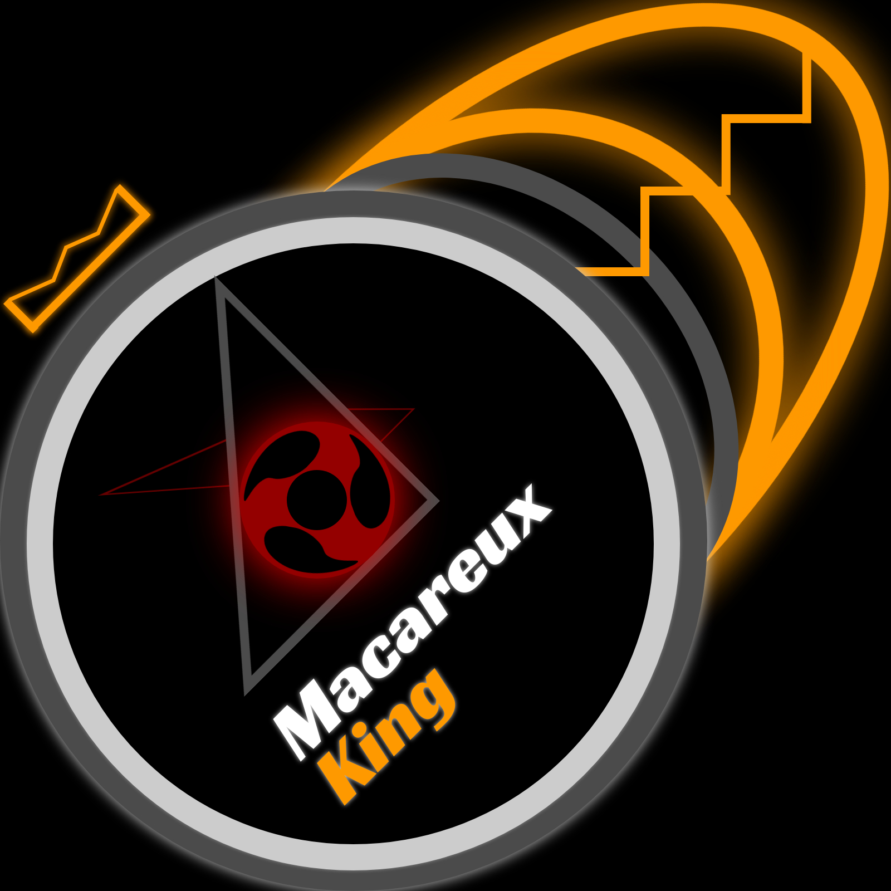
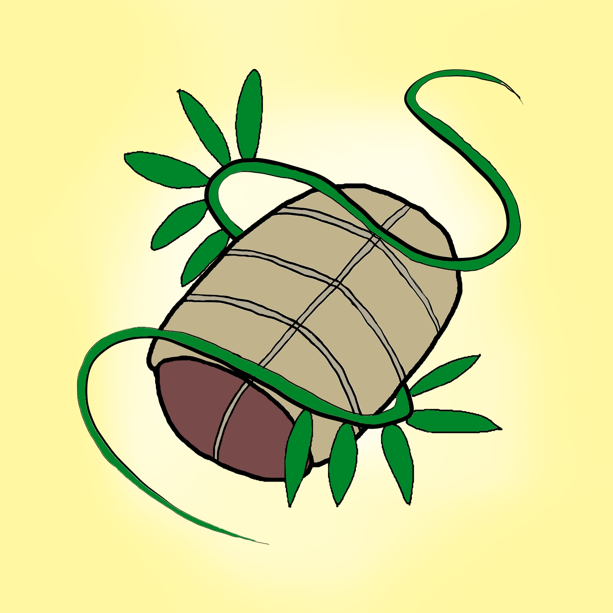

Réalisation audiovisuelle et gestion de chaînes YouTube
Etant attiré depuis longtemps par le monde de l'audiovisuel, j'ai entrepris depuis 4 ans de gérer une chaîne YouTube sur laquelle j'ai posté des vidéos sur des sujets divers et variés. Depuis récemment, j'ai fait le choix de passer la plupart d'entre elles en non répertorié afin de ne garder que ce dont j'étais pleinement fiers et qui me définissait réellement. J'ai également décidé de séparer mon activité en trois chaînes, que j'alimenterai au rythme de mes inspirations et de mon temps libre.
LES CHAÎNES EN QUESTION
MACAREUX KING
Il s'agit de la chaîne que j'ai créée lorsque j'étais au collège et qur laquelle se trouvent la plupart de mon travail, en majorité non répertorié.
Je m'en servirai pour mettre en ligne des tentatives de contenus nouveaux qui ne correspondent pas à ce que je compte faire avec les deux autres chaînes.
ROSALEO

J'ai créé cette chaîne très récemment, suite à la décision de séparer mon activité en deux.
Elle aura pour but de contenir tous les projets liés à la fiction et à l'audiovisuel, des domaines qui me passionnent et dans lesquels je souhaite évoluer plus tard.
Paupiette et Fougère
Il s'agit d'une chaîne collaborative créée avec une amie.
Elle sera une occasion de réaliser des fictions à plusieurs, en nous inspirant du collectif Golden Moustache.
OBJECTIFS
Pour le moment, tous ces projets n'ont pas encore réellement débuté car je souhaite me concentrer sur mes études. Travailler dans le cinéma en tant que réalisateur constitue néanmoins un rêve, que je compte bien développer en parallèle de mes compétences en informatique.